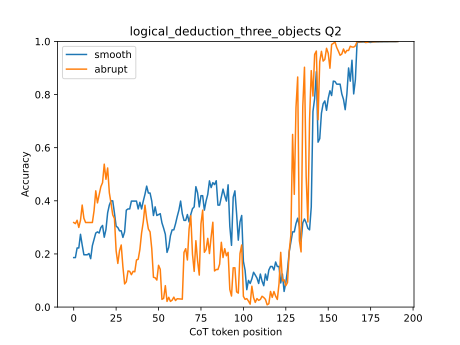

Question 2
The following paragraphs each describe a set of three objects arranged in a fixed order. The statements are logically consistent within each paragraph. On a shelf, there are three books: a blue book, an orange book, and a red book. The blue book is the rightmost. The orange book is the leftmost.
Options:
(A) The blue book is the second from the left
(B) The orange book is the second from the left
(C) The red book is the second from the left
Correct answer: (C)

To solve this, let's analyze the information given:
1. The blue book is the rightmost.
2. The orange book is the leftmost.
From these two statements, we can conclude that the order of the books from left to right is: orange,?, blue.
Now, let's examine the options:
(A) The blue book is the second from the left: This would mean the order is orange, blue,?, which contradicts the given information that the blue book is the rightmost.
(B) The orange book is the second from the left: This would mean the order is?, orange, blue, which also contradicts the given information that the blue book is the rightmost.
(C) The red book is the second from the left: This would mean the order is?, orange, blue, which is consistent with the given information that the blue book is the rightmost.
Therefore, the correct answer is:
ANSWER: C